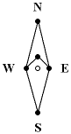
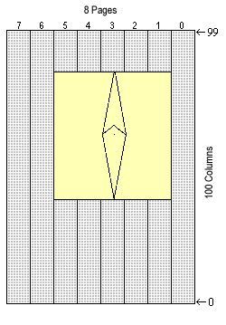

Graphics Routines - Drawing the Needle
With all the graphics primitives (putpixel, line, circle, sprite, etc.)
written the next step was to draw the actual compass needle. A lot
of different methods presented themselves for drawing the needle to
the display. My first idea was to create a bitmap of the compass needle
then
rotate all the individual points in the bitmap
to the correct orientation then write the new bitmap to the screen.
Given that the current needle
is 47 pixels high and 13 pixels wide this would mean 47x23=1081 rotation
calculations each time the compass needle is drawn. I decided this was
too computationally expensive so I looked for a more efficient way to
draw the needle.

I decided the best method was to draw the needle on-the-fly.
The needle is defined by five points as shown by
the diagram on the right. To rotate the needle all I do is
rotate each of the five points around the the center point.
Once the new points are calculated I simple connect the dots
using
Bresenham's line-drawing algorithm.
This approach did take some thought though...as anticipated my
lcd_pixel_set routine was not fast
enough to draw lines for animation. This is due to the fact
that the lcd_pixel_set routine must first read the entire byte
containing the pixel to be set, OR on the pixel, then write the
byte back to the display. This means a read/write to the
display for every pixel set. Even though the LCD is memory-mapped
there were still too many reads and writes to do any kind of half-decent
animation. My next thought was to setup a frame buffer so all I would
have to do is write pixels to the frame buffer, then write the entire
frame buffer to the screen periodically. This idea fell apart when
I did the math. The LCD display is 100x64 pixels=6400 pixels=800 bytes
of data. The 8052 processor only has 256 bytes of RAM so setting
up a frame buffer for the entire display was not feasible. I considered
adding external RAM to the CPU but this will still mean a lot of
slow reads and writes on the external bus.

Eventually I decided that a combination of approaches would be
required. The graphic on the right shows the area to which the compass
needle can be drawn. The area being written to is 36x36=1296 bits=162
bytes, still too big to fit in on-chip RAM I want room for a
stack and other variables.
However, one page width of the bounded area is 36x8=288 bits=36 bytes.
So by writing one page of the bounded area at a time I can have a pixel
buffer of only 36 bytes. This means however that I need to calculate
the entire needle 5 times, each time clipping for that page, then writing out the
pixel buffer with the selected page. Compared to external memory accesses
calculation is fast so this is an acceptable balance. Following is the
pseudocode for my implementation of drawing the compass needle:
buftop:=255; //Start of buffer = high RAM
bufbot:=219; //Bottem of buffer
ytop:=84; //Top y-postion
ybot:=48; //Bottem y-position
for i=5 to 1
for j=buftop to bufbot //Clear pixel buffer
clear buffer[j]; //Clear buffer location j
end;
calculate needle, writing to pixel buffer
and masking for page i;
col:=ytop
for k=buftop to bufbot //Write the pixel buffer
value=pixel_buffer[k] //Fetch 8-bit value from buffer
write_byte(page(i), //Write value to appropriate page i
column(col),
value);
col:=col+1; //Point to next column
end;
end;
Even with the above implementation the needle drawing still suffers from
a bit of flicker. I determined this is due to the response of time of the
LCD and cannot be elimited without a faster LCD display. The
LCD FAQ say STN/DSTN displays have a typical
response time of 200 to 250ms. I checked the LM4064 docs and they do agree
with the FAQ. They documentations specifies a typically rise time of 150ms
and a fall time of 350ms. This implies a definate upper bound on the number
of times the display can be updated per second without be blurring the image.
There are faster display such as the color TFT displays used in digital video
cameras. However, faster displays such as TFT types consume many times
more power so I feel a little blurriness or flicker is an acceptable tradeoff
for ultra-low power consumption.
Following are the routines used to draw the compass needle to the display.
The first routine write_needle() implements the outer loop of the
pseudocode. It clears the pixel buffer, rendors the compass needles, then
writes the pixel buffer to the display. The next routine needle_draw()
rendors the actual compass needle using the five pointes that define the needle
with calls to bres() my Bresenham's line-drawing routine. The bres() routine
calls putpixelbuf() which places pixel into the pixel buffer which clips for the
current page. Finally the write_pixel_buf writes the pixel buffer out to the
appropriate page on the display. The write_needle routine repeats this process
five time to write out the 5 pages the compose the needle display area.
Routine to write the needle to the display
;---------------------------------------------------;
; This routine writes the needle to the display. ;
; INPUT: None ;
; OUTPUT: Writes needle to display ;
; USES: needle_draw, write_pixel_buf ;
; MODIFIES: C Carry Flag ;
;---------------------------------------------------;
write_needle:
push 0x000
push 0x007
push acc
mov r7,#5 ; Get start page
write_needle1:
mov a,r7 ; Get current page
mov r0,#255 ; Get address for buffer header
mov @r0,a ; Set page
; Clear out buffer
mov r0,#254
write_needle2:
mov @r0,#0x000 ; Clear memory location
dec r0 ; Point to next memory loc.
cjne r0,#217,write_needle2
lcall needle_draw
lcall write_pixel_buf ; Write the pixel buffer
djnz r7,write_needle1 ; Done? No then get next page
pop acc
pop 0x007
pop 0x000
ret
|
Routine to rendor compass needle - load pixel buffer
;--------------------------------------------------------;
; This procedure rendors the virtual compass needle. ;
; For output it makes call to putpixelbuf to load ;
; the pixel buffer. ;
; ;
; INPUT: ACC Angle to write compass needle at. ;
; OUTPUT: Writes needles at specified angle. ;
; USES: rpt,bres ;
; ;
; NOTES: Assumes origin at (33,66) ;
; Pass line data to bres using (r2,r3)-(r4,r5) ;
;--------------------------------------------------------;
needle_draw:
push 0x000
push 0x001
push 0x002
push 0x003
push 0x004
push 0x005
push 0x006
push 0x007
push acc
push b
mov b,needle_angle ; Get needle angle
; Draw the new needle
; North tip of needle (0,18)
mov a,b ; Get angle
mov r0,#0 ; North tip of needle (0,18)
mov r1,#18
lcall rpt ; Rotate point
mov a,r0 ; Get x
add a,#34 ; Add origin offset
mov r2,a ; Save x in R2
mov a,r1 ; Get y
add a,#66 ; Add origin offset
mov r3,a ; Save y in R3
; West side of needle (0,-4)
mov a,b ; Get angle
mov r0,#0xFC ; 2's complement for -4
mov r1,#0 ;
lcall rpt ; Rotate point
mov a,r0 ; Get x
add a,#34 ; Add origin offset
mov r4,a ; W->(R4,R5)
mov a,r1 ; Get y
add a,#66 ; Add origin offset
mov r5,a ; W->(R4,R5)
lcall bres ; Write line (W-N)
mov r6,0x004 ; W->(R6,R7)
mov r7,0x005
; East side of needle (4,0)
mov a,b ; Get angle
mov r0,#4 ; Position (4,0)
mov r1,#0 ;
lcall rpt
mov a,r0 ; Get x
add a,#34 ; Add origin offset
mov r4,a ; E->(R4,R5)
mov a,r1 ; Get y
add a,#66 ; Add origin offset
mov r5,a ; E->(R4,R5)
lcall bres ; Write line (N-E)
; Middle triangle (0,5)
mov a,b ; Get angle
mov r0,#0 ; Middle triangle (0,5)
mov r1,#5
lcall rpt
mov a,r0 ; Get x
add a,#34 ; Add origin offset
mov r2,a ; M->(R2,R3)
mov a,r1 ; Get y
add a,#66 ; Add origin offset
mov r3,a ; M->(R2,R3)
lcall bres ; Write line (M-E)
mov r0,0x004 ; E->(R0,R1)
mov r1,0x005
mov r4,0x006 ; W->(R4,R5)
mov r5,0x007
mov r6,0x000 ; E->(R6,R7)
mov r7,0x001
lcall bres ; Write line (M-W)
; South point(0,-18)
mov a,b ; Get angle
mov r0,#0 ; South tip of needle (0,-18)
mov r1,#0xEEh ; 2's complement for -18
lcall rpt
mov a,r0 ; Get x;
add a,#34 ; Add origin offset
mov r2,a ; S->(R2,R3);
mov a,r1 ; Get y
add a,#66 ; Add origin offset
mov r3,a ; S->(R2,R3)
lcall bres ; Write line (W-S)
mov r4,0x006 ; E->(R4,R5)
mov r5,0x007
lcall bres ; Write line (S-E)
pop b
pop acc
pop 0x007
pop 0x006
pop 0x005
pop 0x004
pop 0x003
pop 0x002
pop 0x001
pop 0x000
ret
|
Routine to write a pixel to the pixel buffer
;-----------------------------------------------------------------;
; This routine puts a pixel in the pixel buffer. ;
; ;
; INPUT: MEM 255 The first byte of the buffer has the ;
; current page to write. ;
; MEM 254-216 Bytes in buffer to write ;
; (xpos,ypos) Pixel to write. ;
; ;
; OUTPUT: Puts pixel in pixel buffer. ;
; ;
; NOTES: Its up to the caller to make sure the pixel is within ;
; the bounds of the buffer. ;
;-----------------------------------------------------------------;
put_pixel_buf:
push 0x000
push acc
push b
mov r0,#255 ; Get address for current page
mov a,@r0 ; Fetch page
mov r0,a ; Save page in R0
lcall pixel_get_page ; Get page of pixel
cjne a,0x000,ppb_exit ; Not this page, then exit.
mov r0,b ; R0:=page offset
mov a,#10000000b ; Make a mask
ppb1:
rr a ; Rotate set bit into position
djnz r0,ppb1 ; Loop as needed.
mov b,a ; Save mask in B
mov a,#170 ; Map ypos to buffer
add a,ypos
mov r0,a ; Get address of byte
mov a,@r0 ; Fetch byte from buffer
orl a,b ; OR on the mask bit
mov @r0,a ; Save back
ppb_exit:
pop b
pop acc
pop 0x000
ret
|
Routine to write pixel buffer to display
;--------------------------------------------------------------;
; This routine writes the pixel buffer to the display. ;
; Its assumes that the appropriate LCD column has already ;
; been set. ;
; ;
; INPUT: MEM 255 The first byte of the buffer has ;
; the current page to write. ;
; MEM 254-216 Bytes in buffer to write ;
; OUTPUT: Write pixel buffer page to display. ;
; USES: lcd_set_page, lcd_set_column, lcd_write_byte ;
; MODIFIES: C Carry Flag ;
;--------------------------------------------------------------;
write_pixel_buf:
push 0x000
push acc
mov r0,#255 ; Get the page
mov a,@r0
lcall lcd_set_page ; Set page
mov a,#84 ; Set column
lcall lcd_set_column
mov r0,#254 ; Point to start of buffer
wpb1:
mov a,@r0 ; Fetch byte
lcall lcd_write_byte ; Write byte to display
dec r0 ; Point to next byte
cjne r0,#217,wpb1 ; Done? No then loop
pop acc
pop 0x000
ret
|
Raymond E. Marcil
Last modified: Thu Apr 10 19:56:15 AKST 2000
|